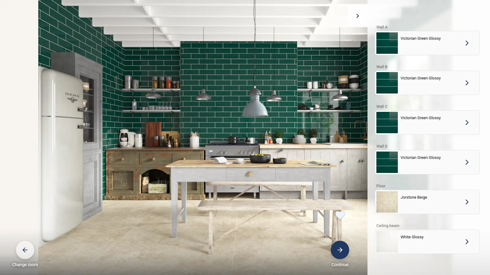
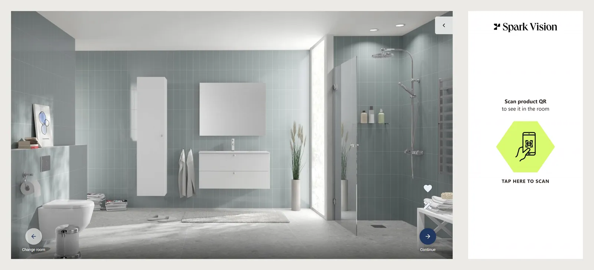
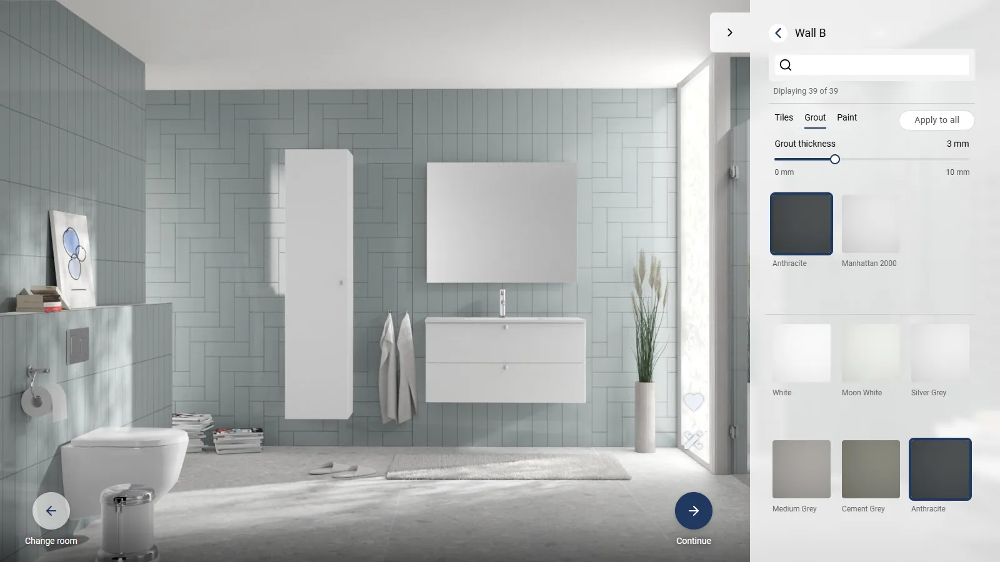

Spark Digital Showroom
A room configurator that runs as about 95 production apps for tile, bathroom and floor sellers. I have built and run it alone since 2023.
- Period
- 2023-08 – present
- My role
- Sole developer, from rendering backend to web front end and desktop app
- Team
- Alone; an experienced colleague reviews sensitive or architectural changes
- Result
- About 95 production showroom apps run on it, about 70 of them with outside traffic in a given month.
- Status
- Active
- Built with
- C#, .NET, ASP.NET, TypeScript, React, WPF, Redis, Playwright, Jenkins
- Made at
- SparkVision

Summary
SparkVision's room configurator. Tile, bathroom and floor retailers and manufacturers run it on their websites and on in-store screens, so a shopper can see products in a room before buying and leave with something a shop can act on: a summary, a PDF, a mail or an order. It is one environment of several parts: a .NET rendering and API backend, a React web front end, a Windows kiosk app, and the services that deploy and watch them. Each part has its own page; this page holds the product, its features and the decisions that span it.
How agents were used
- Since April 2026 agents wrote most of the code. I cut the work into slices, made the design decisions and reviewed every pull request.
- Since 2026 the rotation and grout epics were mapped as research and decision tickets, then cut into slices, each labelled for an agent or for a human.
- After attending a workshop on Claude Code, I brought its workflows into the backend repository, then agent guides and a glossary into both repositories.
What I did
- Worked on these applications alone from the start. In my first year an experienced colleague reviewed much of my work; since then I have been responsible for all of them, and bring that colleague in only for sensitive systems or larger architectural changes.
- Reviewed colleagues' pull requests to the backend throughout, from image composition to cache budgets.
- Built a shared Claude Code workspace that six people in three departments use.
- Extended the rendering with new wood patterns, hexagon and triangle tiles, and a new rectangle render that replaced the old one in every showroom.
- Built the summary exits a shopper leaves with: mail, PDF, lead capture and a Send in Shop card with a salesperson list.
- Rewrote the Windows kiosk app from scratch as a WPF shell around the web configurator, with a signed release flow.
- Automated the watchdog that restarts a failing app on the production servers, and am building a new deploy service so the team no longer logs in over remote desktop to deploy, pause or restart an app.
Features
Bring Your Own Room
A shopper uploads a photo of their own room, the surfaces in it are found, and they apply tiles and floors to them as in a catalog room, then leave with the same summary, PDF, mail or order.
- Mine: I planned the epic and cut it into spikes and slices, built the backend seam, the asynchronous job machinery and the photo render service, moved segmentation to the render node, and built the add-your-room screens.
- Others: a colleague built the segmentation model that finds the surfaces, and another team owns the renderer that draws the products on them.
Phone remote by QR code
On an in-store screen, a shopper scans a QR code and their phone becomes the remote: they choose a surface, scan products in the shop to apply them, and the session ends after a period without use.

- Mine: I built it from the first demo, through pairing and scanning in the backend and the phone flow in the front end, to the kiosk's idle timer.
Tile rotation at any angle
A shopper turns the tiles or wood floor on a surface to any angle from the Pattern popup, and the room re-renders. The angle stays through product changes, shared links and saved rooms.
- Mine: I settled the open questions as decision tickets, then built the rendering, the API, the links and the control.
- Others: another team owns the renderer that draws the turned tiles.
Grout thickness
A shopper sets the grout thickness of each tile surface with a slider. The render, shared links, saved rooms, the summary, the PDF, the mail and the order all carry it.

- Mine: I researched how pre-rendered tile images could honour a chosen thickness, then built it from the backend to the order and the slider.
- Others: another team owns the renderer that draws the grout.
Outcomes
- About 95 production showroom apps run on it, about 70 of them with outside traffic in a given month.
- The rewritten kiosk app was, as of October 2026, about to reach 50 customers and hundreds of screens.
- All four features are live: Bring Your Own Room, the phone remote, tile rotation and grout thickness.
Decisions
An on-demand, content-addressed summary PDF
A summary PDF is now generated when asked for and cached by its configuration and render parameters, so a link already sent keeps resolving. For photographed rooms I rejected keying on the session, which would serve a stale PDF after a tile change.
Prices resolved at request time
Looking prices up at load time by the bare retailer id could not match templated Display IDs, so those products had no price. A new provider resolves the price by the final Display ID when the request comes in, and the summary, PDF and mail inherit it. Disabling a product by its Display ID stayed out of scope, a known limitation.
Segmentation moved to the render node
Room-photo segmentation first moved to the render node as an opt-in mode. I deliberately kept its reachability out of the boot check, because an unreachable node would otherwise take a site down. Later the node became the only processor, and a retired mode now fails boot with a message that names the fix. The cost: renders from the node differ from the local pipeline's, which I accepted over maintaining a second copy of the options.
A photographed room behaves like a catalog room
Shops already handle orders in one shape, so orders from a photographed room keep it and nothing downstream changes. Restoring a saved room takes a snapshot, not an overlay, because treating a missing value as "skip" produced mixed rooms. The cost: a mailed link resolves only while its room does, and how long a room stays reachable is still open.
Next: Autonomy